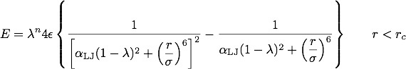
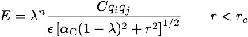

pair_style lj/cut/soft command¶
pair_style lj/cut/soft/omp command¶
pair_style lj/cut/coul/cut/soft command¶
pair_style lj/cut/coul/cut/soft/omp command¶
pair_style lj/cut/coul/long/soft command¶
pair_style lj/cut/coul/long/soft/omp command¶
pair_style lj/cut/tip4p/long/soft command¶
pair_style lj/cut/tip4p/long/soft/omp command¶
pair_style lj/charmm/coul/long/soft command¶
pair_style lj/charmm/coul/long/soft/omp command¶
pair_style coul/cut/soft command¶
pair_style coul/cut/soft/omp command¶
pair_style coul/long/soft command¶
pair_style coul/long/soft/omp command¶
pair_style tip4p/long/soft command¶
pair_style tip4p/long/soft/omp command¶
Syntax¶
pair_style style args
- style = lj/cut/soft or lj/cut/coul/cut/soft or lj/cut/coul/long/soft or lj/cut/tip4p/long/soft or lj/charmm/coul/long/soft or coul/cut/soft or coul/long/soft or tip4p/long/soft
- args = list of arguments for a particular style
lj/cut/soft args = n alpha_lj cutoff n, alpha_LJ = parameters of soft-core potential cutoff = global cutoff for Lennard-Jones interactions (distance units) lj/cut/coul/cut/soft args = n alpha_LJ alpha_C cutoff (cutoff2) n, alpha_LJ, alpha_C = parameters of soft-core potential cutoff = global cutoff for LJ (and Coulombic if only 1 arg) (distance units) cutoff2 = global cutoff for Coulombic (optional) (distance units) lj/cut/coul/long/soft args = n alpha_LJ alpha_C cutoff n, alpha_LJ, alpha_C = parameters of the soft-core potential cutoff = global cutoff for LJ (and Coulombic if only 1 arg) (distance units) cutoff2 = global cutoff for Coulombic (optional) (distance units) lj/cut/tip4p/long/soft args = otype htype btype atype qdist n alpha_LJ alpha_C cutoff (cutoff2) otype,htype = atom types for TIP4P O and H btype,atype = bond and angle types for TIP4P waters qdist = distance from O atom to massless charge (distance units) n, alpha_LJ, alpha_C = parameters of the soft-core potential cutoff = global cutoff for LJ (and Coulombic if only 1 arg) (distance units) cutoff2 = global cutoff for Coulombic (optional) (distance units) lj/charmm/coul/long/soft args = n alpha_LJ alpha_C inner outer (cutoff) n, alpha_LJ, alpha_C = parameters of the soft-core potential inner, outer = global switching cutoffs for LJ (and Coulombic if only 5 args) cutoff = global cutoff for Coulombic (optional, outer is Coulombic cutoff if only 5 args) coul/cut/soft args = n alpha_C cutoff n, alpha_C = parameters of the soft-core potential cutoff = global cutoff for Coulomb interactions (distance units) coul/long/soft args = n alpha_C cutoff n, alpha_C = parameters of the soft-core potential cutoff = global cutoff for Coulomb interactions (distance units) tip4p/long/soft args = otype htype btype atype qdist n alpha_C cutoff otype,htype = atom types for TIP4P O and H btype,atype = bond and angle types for TIP4P waters qdist = distance from O atom to massless charge (distance units) n, alpha_C = parameters of the soft-core potential cutoff = global cutoff for Coulomb interactions (distance units)
Examples¶
pair_style lj/cut/soft 2.0 0.5 9.5
pair_coeff * * 0.28 3.1 1.0
pair_coeff 1 1 0.28 3.1 1.0 9.5
pair_style lj/cut/coul/cut/soft 2.0 0.5 10.0 9.5
pair_style lj/cut/coul/cut/soft 2.0 0.5 10.0 9.5 9.5
pair_coeff * * 0.28 3.1 1.0
pair_coeff 1 1 0.28 3.1 0.5 10.0
pair_coeff 1 1 0.28 3.1 0.5 10.0 9.5
pair_style lj/cut/coul/long/soft 2.0 0.5 10.0 9.5
pair_style lj/cut/coul/long/soft 2.0 0.5 10.0 9.5 9.5
pair_coeff * * 0.28 3.1 1.0
pair_coeff 1 1 0.28 3.1 0.0 10.0
pair_coeff 1 1 0.28 3.1 0.0 10.0 9.5
pair_style lj/cut/tip4p/long/soft 1 2 7 8 0.15 2.0 0.5 10.0 9.8
pair_style lj/cut/tip4p/long/soft 1 2 7 8 0.15 2.0 0.5 10.0 9.8 9.5
pair_coeff * * 0.155 3.1536 1.0
pair_coeff 1 1 0.155 3.1536 1.0 9.5
pair_style lj/charmm/coul/long 2.0 0.5 10.0 8.0 10.0
pair_style lj/charmm/coul/long 2.0 0.5 10.0 8.0 10.0 9.0
pair_coeff * * 0.28 3.1 1.0
pair_coeff 1 1 0.28 3.1 1.0 0.14 3.1
pair_style coul/long/soft 1.0 10.0 9.5
pair_coeff * * 1.0
pair_coeff 1 1 1.0 9.5
pair_style tip4p/long/soft 1 2 7 8 0.15 2.0 0.5 10.0 9.8
pair_coeff * * 1.0
pair_coeff 1 1 1.0 9.5
Description¶
The lj/cut/soft style and substyles compute the 12/6 Lennard-Jones and Coulomb potential modified by a soft core, in order to avoid singularities during free energy calculations when sites are created or anihilated (Beutler),
Coulomb interactions are also damped with a soft core at short distance,
In the Coulomb part C is an energy-conversion constant, q_i and q_j are the charges on the 2 atoms, and epsilon is the dielectric constant which can be set by the dielectric command.
The coefficient lambda is an activation parameter. When lambda = 1 the pair potentiel is identical to a Lennard-Jones term or a Coulomb term or a combination of both. When lambda = 0 the interactions are deactivated. The transition between these two extrema is smoothed by a soft repulsive core in order to avoid singularities in potential energy and forces when sites are created or anihilated and can overlap (Beutler).
The paratemers n, alpha_LJ and alpha_C are set in the pair_style command, before the cutoffs. Usual choices for the exponent are n = 2 or n = 1. For the remaining coefficients alpha_LJ = 0.5 and alpha_C = 10 Angstrom^2 are appropriate choices. Plots of the LJ and Coulomb terms are shown below, for lambda ranging from 1 to 0 every 0.1.


For the lj/cut/coul/cut/soft or lj/cut/coul/long/soft pair styles, the following coefficients must be defined for each pair of atoms types via the pair_coeff command as in the examples above, or in the data file or restart files read by the read_data or read_restart commands, or by mixing as described below:
- epsilon (energy units)
- sigma (distance units)
- lambda (activation parameter between 0 and 1)
- cutoff1 (distance units)
- cutoff2 (distance units)
The latter two coefficients are optional. If not specified, the global LJ and Coulombic cutoffs specified in the pair_style command are used. If only one cutoff is specified, it is used as the cutoff for both LJ and Coulombic interactions for this type pair. If both coefficients are specified, they are used as the LJ and Coulombic cutoffs for this type pair. You cannot specify 2 cutoffs for style lj/cut/soft, since it has no Coulombic terms. For the coul/cut/soft and coul/long/soft only lambda and the optional cutoff2 are to be specified.
Style lj/cut/tip4p/long/soft implements a soft-core version of the TIP4P water model. The usage of this pair style is documented in the pair_lj styles. The soft-core version introduces the lambda parameter to the list of arguments, after epsilon and sigma in the pair_coeff command. The paratemers n, alpha_LJ and alpha_C are set in the pair_style command, before the cutoffs.
Style lj/charmm/coul/long/soft implements a soft-core version of the CHARMM version of LJ interactions with an additional switching function S(r) that ramps the energy and force smoothly to zero between an inner and outer cutoff. The usage of this pair style is documented in the pair_charmm styles. The soft-core version introduces the lambda parameter to the list of arguments, after epsilon and sigma in the pair_coeff command (and before the optional eps14 and sigma14). The paratemers n, alpha_LJ and alpha_C are set in the pair_style command, before the cutoffs.
The coul/cut/soft, coul/long/soft and tip4p/long/soft substyles are designed to be combined with other pair potentials via the pair_style hybrid/overlay command. This is because they have no repulsive core. Hence, if used by themselves, there will be no repulsion to keep two oppositely charged particles from overlapping each other. In this case, if lambda = 1, a singularity may occur. These substyles are suitable to represent charges embedded in the Lennard-Jones radius of another site (for example hydrogen atoms in several water models).
NOTES: When using the core-softed Coulomb potentials with long-range solvers (coul/long/soft, lj/cut/coul/long/soft, etc.) in a free energy calculation in which sites holding electrostatic charges are being created or anihilated (using fix_adapt/fep and compute_fep) it is important to adapt both the lambda activation parameter (from 0 to 1, or the reverse) and the value of the charge (from 0 to its final value, or the reverse). This ensures that long-range electrostatic terms (kspace) are correct. It is not necessary to use core-softed Coulomb potentials if the van der Waals site is present during the free-energy route, thus avoiding overlap of the charges. Examples are provided in the LAMMPS source directory tree, under examples/USER/fep.
Styles with a cuda, gpu, intel, kk, omp, or opt suffix are functionally the same as the corresponding style without the suffix. They have been optimized to run faster, depending on your available hardware, as discussed in Section_accelerate of the manual. The accelerated styles take the same arguments and should produce the same results, except for round-off and precision issues.
These accelerated styles are part of the USER-CUDA, GPU, USER-INTEL, KOKKOS, USER-OMP and OPT packages, respectively. They are only enabled if LAMMPS was built with those packages. See the Making LAMMPS section for more info.
You can specify the accelerated styles explicitly in your input script by including their suffix, or you can use the -suffix command-line switch when you invoke LAMMPS, or you can use the suffix command in your input script.
See Section_accelerate of the manual for more instructions on how to use the accelerated styles effectively.
Mixing, shift, tail correction, restart info:
For atom type pairs I,J and I != J, the epsilon and sigma coefficients and cutoff distance for this pair style can be mixed. The default mix value is geometric. See the “pair_modify” command for details.
These pair styles support the pair_modify shift option for the energy of the Lennard-Jones portion of the pair interaction.
These pair styles support the pair_modify tail option for adding a long-range tail correction to the energy and pressure for the Lennard-Jones portion of the pair interaction.
These pair styles write information to binary restart files, so pair_style and pair_coeff commands do not need to be specified in an input script that reads a restart file.
Restrictions¶
To avoid division by zero do not set sigma = 0; use the lambda parameter instead to activate/deactivate interactions, or use epsilon = 0 and sigma = 1. Alternatively, when sites do not interact though the Lennard-Jones term the coul/long/soft or similar substyle can be used via the pair_style hybrid/overlay command.
All of the plain soft pair styles are part of the USER-FEP package. The long styles also requires the KSPACE package to be installed. They are only enabled if LAMMPS was built with those packages. See the Making LAMMPS section for more info.